Selected Student Projects
Here, you can find projects developed by students working with us, for example as part of a Bachelor and Master thesis or during a course work project.
Thesis Projects

Course Projects
2021
-
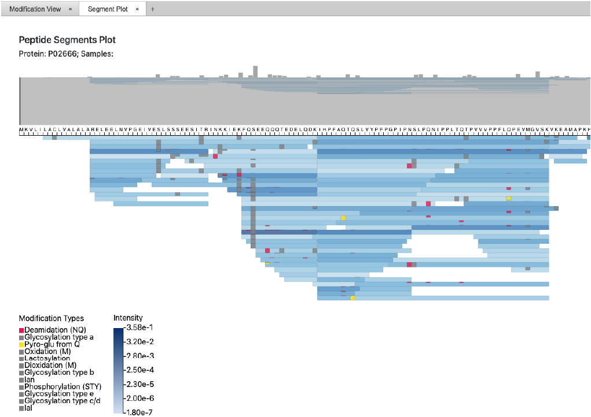Visualizing Mass Spectrometry Data
PepModVis is a tool that supports food scientists in analyzing mass spectrometry data of protein samples. The analysis is done by using three different visualizations that each explore how peptide modifications are distributed in protein samples at different levels of granularity. The first visualization uses a heat map to show how modifications are distributed across different proteins; the second uses a heat map to show how modifications are distributed across samples; the third shows how modifications are distributed across peptides by using a novel visualization we call Peptide Segments Plot (PSP). In the PSP, peptides are visualized as rectangular segments, where the length and position of the segment encode the amino acid sequence of the peptides. The peptide modifications are likewise encoded as rectangles on top of the segments in which they are contained. The tool allows for exploratory data analysis by providing a structured overview and the possibility to interactively traverse the acquired MS data.
-
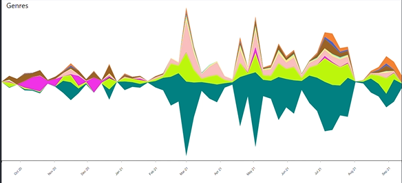Spotify Streaming History Visualization
We have visualized our own data about music we have heard on Spotify. We have made a theme river and stacked area charts to show the temporal aspect. To compare features such as acousticness and danceability between genres, artists, and songs we have a grouped column chart. To compare the same features across different periods we have a column chart with selection menus. We also have a list showing the top artists.
-
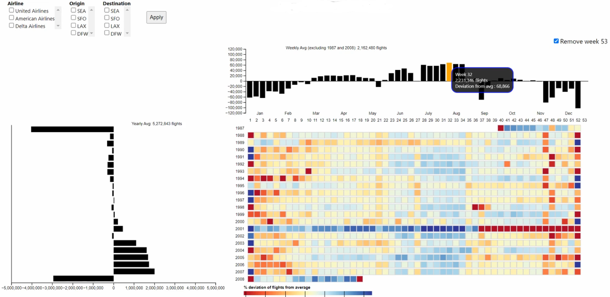Visualizing all Flights in the USA between 1987-2008
This visualization enables users to explore a large dataset (120 million instances) of the details of all commercial flights in the USA between 1987 and 2008 (inclusive). The fields available include: Origin, Destination, expected and actual arrival and departure times, details on delay and cancellation (if such occurred), date that the flights was scheduled for, etc. The data is obviously too large to manually parse, and we found our visualization led to interesting (even counter-intuitive) discoveries.
-
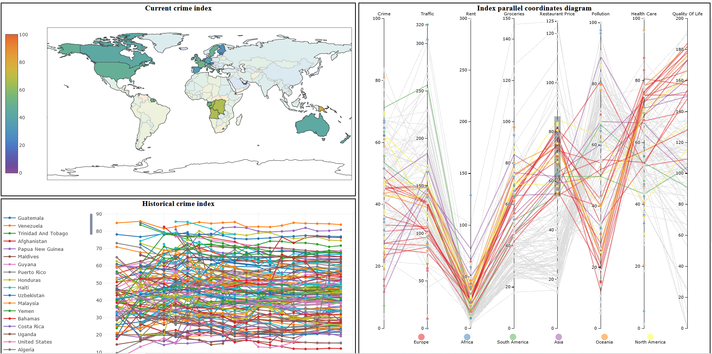Visual Country Index Explorer for Numbeo Data
This project focuses on visualizing the crowd-sourced data from Numbeo, a website that gathers information on cost and standard of living for cities and countries across the world. The project focuses on the country index dataset with indices for areas such as cost of living, safety, wealth, and pollution. There are geo-spatial and time contexts for the data, and the proposed visualization tries to encapsulate all these dimensions into three multi-coordinated views: one for the geospatial context, one for the temporal context, and one for the for comparing the indices.
-
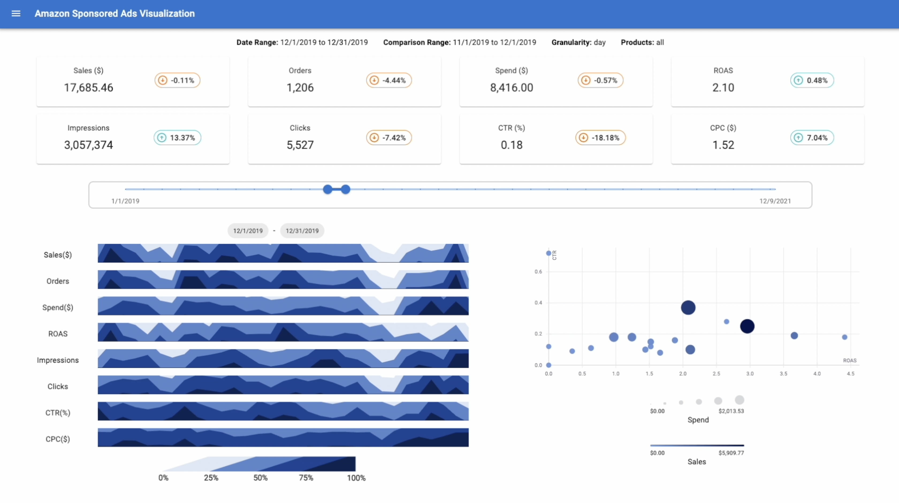Amazon Ads Analytics Visualization
We present a visualization of Amazon advertisement analytic data for tracking, monitoring and optimizing the performance of sponsored ads for products sold at the Amazon marketplace. To do so, we present a web application dashboard that graphically shows relevant information from the raw data provided by Amazon Ads on a daily basis for products, advertisement campaigns, and keywords, with multiple indicators and metrics to measure that performance. The main focus is to visualize temporal data while promoting interactivity through Multiple Coordinated Views to allow users to identify trends and performance levels.
-
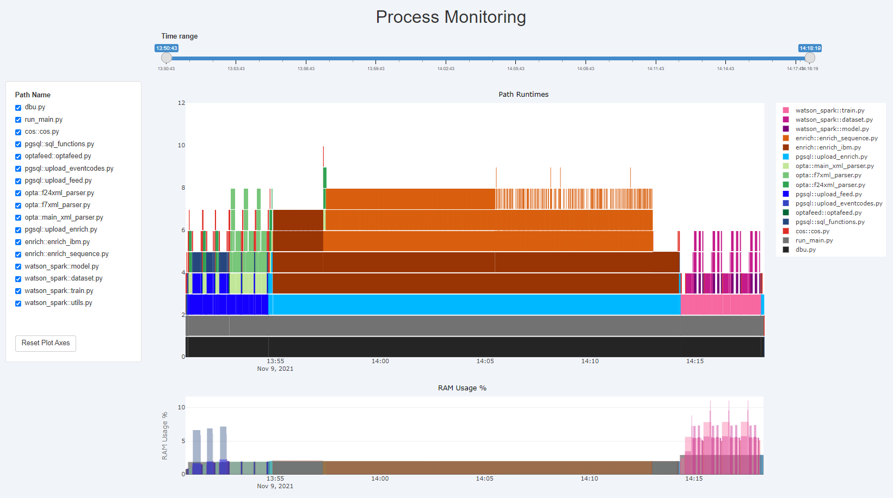Visualizing Process Monitoring Data
We introduce a profiling visualization developed for the area of application performance management. Our visualization allows users to gain an overview of performance during execution and identify bottlenecks or other adverse effects. The tool developed for this paper utilizes visualizations such as Flamegraphs and charts, supplemented by zoom, filter and interaction functionalities, compiled into a multiple coordinated view layout. The focus is on visualizing runtimes and call-stacks of system files, as well as memory (RAM) usage during execution. It was found that the tool is effective for solving the task of identifying performance issues, at a high-level view.
-
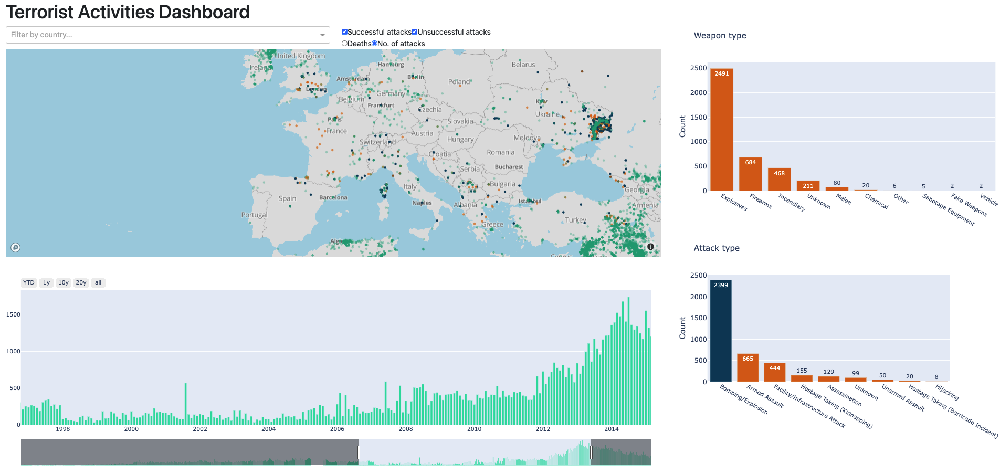World Terrorist Attack Data Visualization
With the ever-increasing number of terrorist attacks in the world along with the means of recording them, it is becoming infeasible to find meaning in the collected data. Given the amount of already existing misinformation based on misinterpreting the data, this may further lead to biases or prejudices against a specific nationality, race, or belief. In this project, we decided to bring more clarity to the data by leveraging the advantages of data visualization. In the end, we successfully developed a highly interactive visual dashboard that allows its users to explore the data efficiently and effectively.
-
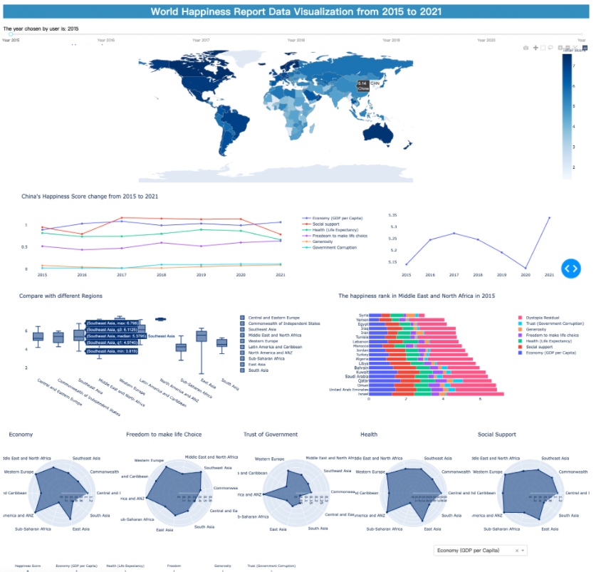World Happiness Data Visualization
The aim of this project is to visualize the happiness of people in different places, and help people get a better view of the world happiness report rather than abstract numbers. Users can visualize the total happiness score of all countries and regions on the world map. Also, users can find the correlations between happiness and different factors such as economy, social support, life expectancy, etc. And users can find out which area’s people are happier and the relationship between happiness and the development of countries. Last but not least, users can make comparisons between different countries, and see the trend of their scores from 2015 to 2021, and analyze why their happiness scores manifest such trend.
2020
-
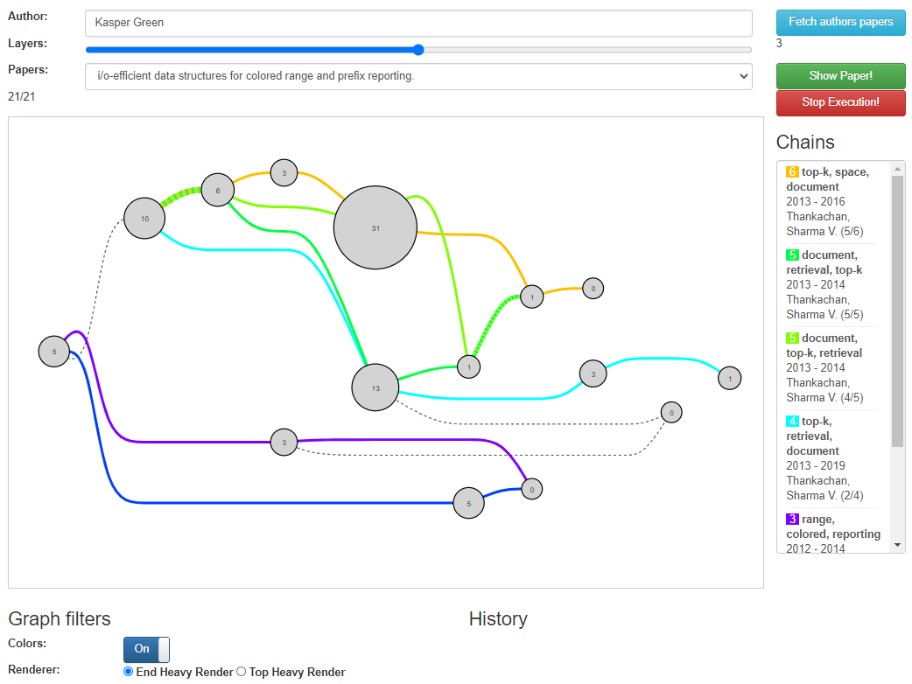Visualizing Citation Graphs
Our project was about identifying and visualizing the chains of citations that exist between research papers in the field of Computer Science.
-
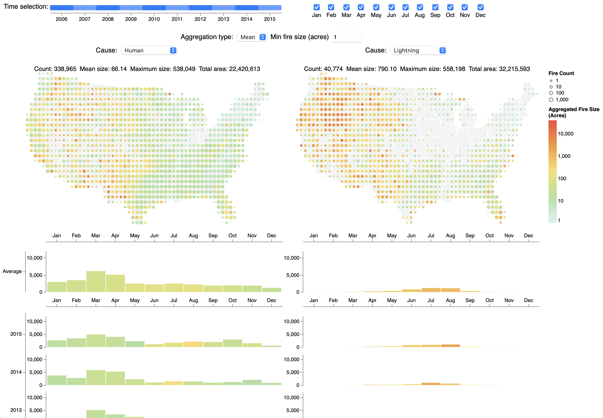Visualizing Wildfires in the US
Our project aims to show the differences between fires depending on what caused the fires. Differences in frequency, size, location and time of year can all be seen in a single interactive visualization. In particular, we focused on comparing human generated fires with lightning generated fires.
-
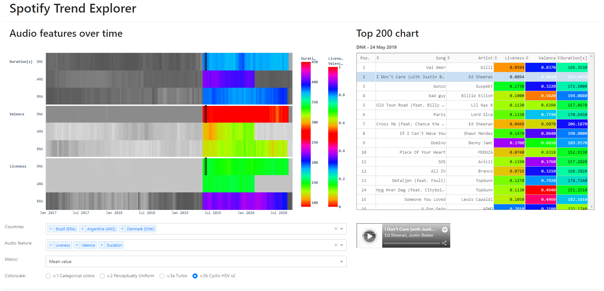Spotify Music Visualization
Our project was about presenting Spotify's weekly top 200 song charts for a time span of 4 years across 60 countries. By extracting 'audio features' from Spotify's API, we could visualize patterns and trends in music around the world.
-
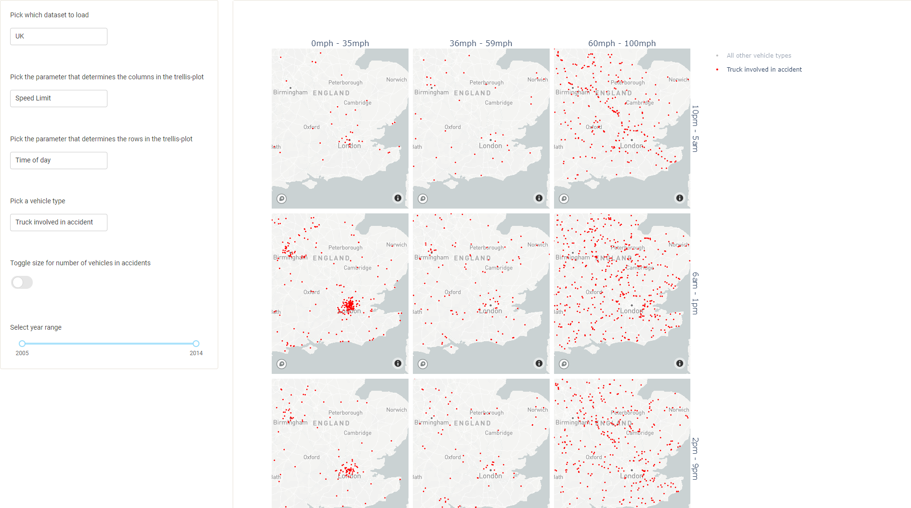Road Accidents in the US and the UK
This project focuses on getting an informed and better understanding of the traffic data available to the public from the National Highway Traffic Administration and the United Kingdom Department for Transport from 2005-2015. To visualize this data, we decided to implement a dynamic trellis plot do give as much power to the user as possible. The user can select what parameter that will determine the x and y axis of the trellis plot, what vehicle type to highlight, whether the size of an accident should be visualized and what accidents in a year range within 2005-2015 should be visualized. Furthermore, the user can select a group of accidents with box selections and a more detailed bar chart will appear.
-
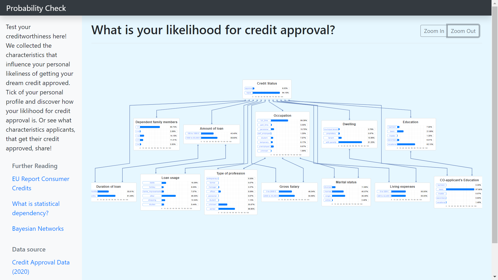Interactive Bayesian Network Models
In my project I developed an interactive visualization of a Bayesian Network model explaining the relation between credit approval likelihood and the applicant’s characteristics. The tool is based on open source web technologies and the statistical developer environment R. I integrated bar plots as detailed plots within the bigger graph structure showing the conditional probabilities.
-
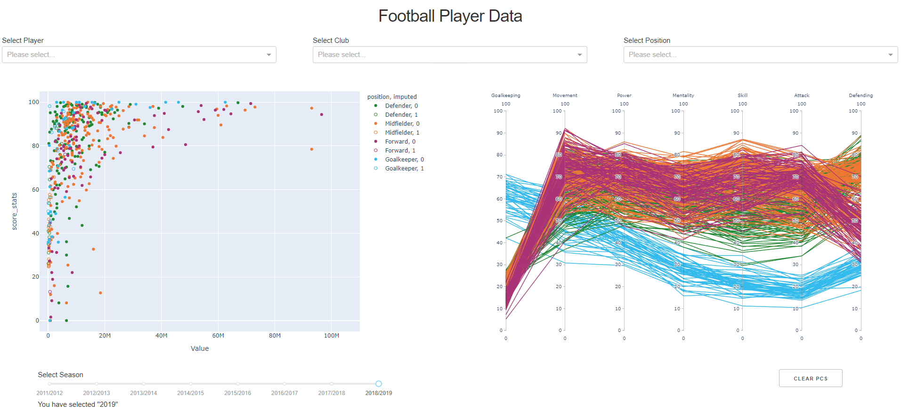Visualizing Soccer Player Stats
The goal with the project was to make a scouting tool for soccer scouts and management in football clubs that allows them to make their player assessment process faster. The tool uses data from the English Premier League and combines two different plots that enables the user to find the right player.
-
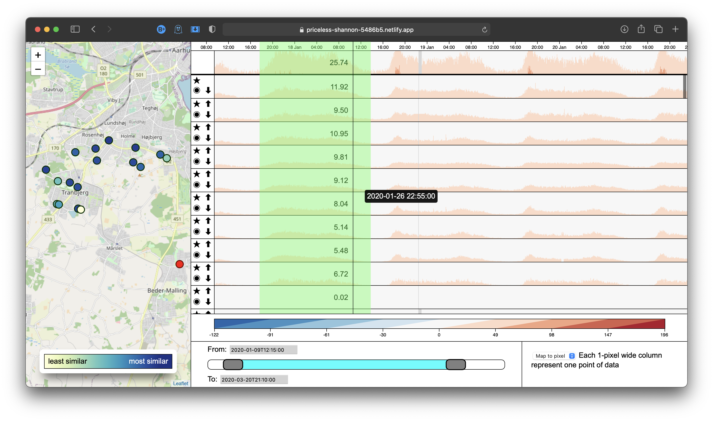Water Flow in Aarhus
We have worked to visualize complex time series data of water flow in Aarhus, with data curtesy of Aarhus Vand. We have made an application there allows Aarhus Vand to explore and combine patterns of water usage measured from different locations around Aarhus. We have used Horizon Graphs to visualize flow, and applied interactive methods to compare usage and find patterns.
2019
-
 - Casper Hogenboom.png) Expanding your portfolio with Sneakers
Expanding your portfolio with SneakersAre you looking for an alternative way to enrich your portfolio? Step into the world of the sneaker business, and plan out your technical strategies. In this project, a dataset from the website StockX is explored to give an insight into what time it is best to buy or sell.
-
 High-Dimensionality Data Exploration to Reveal Features Underlying Disease
High-Dimensionality Data Exploration to Reveal Features Underlying DiseaseSome disease predictors are inaccurate in distinguishing a pre-disease population. Unsupervised learning allows for clustering of medical data without need of a disease predictor. This tool allows for analysis of high dimensional patient data and exploration of patient grouping into diseased, at-risk, and healthy populations as derived from unsupervised methods. These methods can be altered quickly, providing rapid analysis of the clusters and insight into novel biomarkers underlying disease.
-
 Facebook Messages
Facebook MessagesFacebook Messenger makes it easy to send and receive messages between your friends, and you can create group chats to keep in touch with many people at once. But Facebook does not provide a way of searching for patterns or trends in your messaging data. In this project, I create a visualisation of my own Facebook Messenger data that allows for overview and details on demand by filtering the data set and finding trends based on contact, timeframe, conversation type, month, weekday or hour.
-
 Language Correlation in Open Source
Language Correlation in Open SourceThis visualization helps to explore how different languages are connected to each other on Github. This is done by having a matrix representation showing the deviation from the expected value, and a chord diagram visualising the amount of connections between each language. We make a connection between language A and language B, if a user on Github has a repo with A and another repo with B.
-
 What's going on in German Government?
What's going on in German Government?This project aims to shed light into the matters of the German Bundestag by presenting the voting outcome for each parliament session since 2007 in a visually analyzable way. It allows comparing the voting behavior of the parties against each other and over time.
-
 Displacing Germany: A Look at Trans-Atlantic Slave Trade
Displacing Germany: A Look at Trans-Atlantic Slave TradeAround 10 million people were abducted from Africa and shipped to the Americas between the years 1510 to 1860 as part of the transatlantic slave trade. This amounted to one percent of the world's total population in 1800. Today, the same would be analogous to displacing entire country of Germany. Our project is an attempt to visualise the involved voyages both on an aggregate and detailed level to shed some light on the human element of the egregious events of the past.